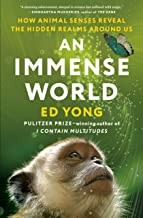
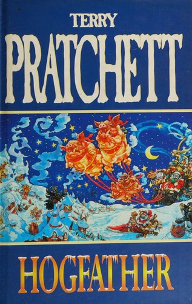
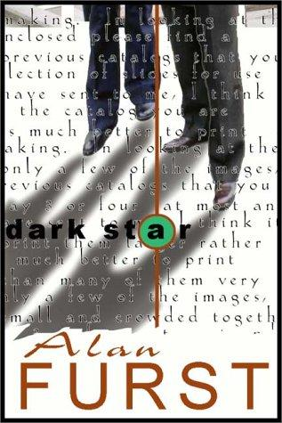
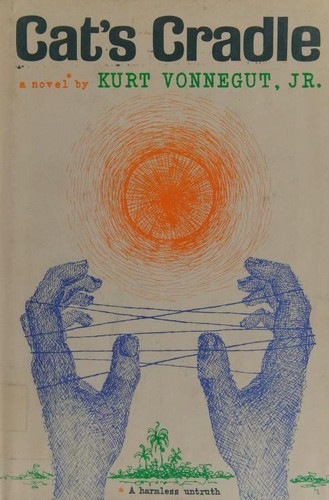

weekly digest
Week 2026-32
Recommendations for the week of 3 August 2026.
Three distinct growth edges this week. The translated non-Western literary shelf reaches a tradition it has never held — contemporary Chinese fiction — with the most radically experimental living writer working in the language, formally strange to the core and unapologetically dream-logical. Narrative science moves beyond Attenborough into the idea of the Umwelt: how every animal inhabits its own sensory world, built species by species from the primary research as a conceptual argument rather than a menagerie. And the epistemology edge returns, but pointed past the Bayesian frame the shelf already knows — a case that the most consequential decisions face uncertainty no probability distribution can hold. The comfort picks spread across three well-loved veins: a standalone Discworld on why we practise believing small lies, the atmospheric spy novel from a fresh master of the form, and a savagely funny apocalypse that treats science and faith with equal, unsentimental irreverence — each new to the shelf, all fun, none consoling.
Highbrow


Lowbrow


